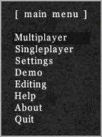

AssaultCubes interface
Simply, this is about how AssaultCube looks, feels and works. The interface should feel fairly familiar, echoing that of many other first-person shooters. Go ahead, jump right in!
Menus
While in-game, press ESC to access a menu. From there you can access almost anything and use all sorts of actions, like joining multiplayer games and changing settings, as well as using text inputs, checkboxes and menu sliders.
As an example, in multiplayer you can use the set mode/map submenu to vote on a new mode/map. Further customizations and actions can be done to these menus using CubeScript.
In some circumstances, there may be more on a menu than what can be shown. In these cases, small arrows will show at the top/bottom right-side of the menu. Pressing page-up/page-down will then show the next page.
The console
Many actions in AssaultCube can be done in a console. Although not entirely necessary to use it (the menu can be used to do most important commands - but not all of them) it can be very useful and often faster to use the console.
To show the console, press T. This opens up the chat prompt. To turn it into a console, all you need to do is add a / (forward-slash) at the beginning of the prompt, followed by a command.
As an example, if you type the following into the chat prompt, your crosshair will change size: /crosshairsize 25
For a list of all possible commands, read the CubeScript reference.
Hint: You can toggle showing a longer command/chat history by pressing F11.
The HUD
HUD stands for Head-up display and is a common term in video gaming. The HUD is used to indicate things such as health, armour, ammo, etc when playing the AssaultCube.

You may notice small red markers at the edges of your screen during conflict. This is to indicate the direction of where the damage that hit your player came from. The capture-the-flag HUD is different to the normal HUD, click the image above to see the CTF HUD.
The scoreboard
Press TAB at any time to see the scoreboard, which will tell you (horizontally in this order):
- CTF flags captured (if playing flag modes).
- Death count.
- Packet jump (PJ).
- CN (Client number).
- Frag count.
- Score.
- The ping between the player and the server.
- The players name.

Pressing page-up/page-down on the scoreboard will show the next page on the scoreboard. You'll be able to tell if there is another page (this occurs when there are too many players to fit) by the arrow at the bottom of the screen.
Packet jump (PJ) is the amount of milliseconds that have passed since you have received updates from players.
A high (for example: 950) or variable (for example: The PJ is at 40 then jumps to 1000 and then 300 then 550) packet
jump is bad for gameplay, because these players may become difficult targets and "warp" around the map (warp means
they disappear, then reappear out of nowhere).
If a players packet jump is bad enough, their PJ number will turn into the
word LAG and they'll stand still and start saluting because they are lagging so badly. Special note: You cannot see
your own packet jump.
Ping is the amount of time in milliseconds that it takes for your packets of data to get back and forth from the
server.
The lower the ping, the better.
Client number is a number that is given out automatically by the server.
There is nothing particularly special about it
other than allowing people to identify players easier.
If a player name is red, then they are an administrator of that server and have full control over it.
Players names that are in grey, are currently in dead/spectate mode.
Mini-map
The mini-map shows your location on the map. To activate it, hold down ALT.
You can find yourself on the mini-map by looking for the symbol in green. As well as showing your location on the map, it will also show your team-mates locations (if you're playing a team-based game). X's mark dead team-mates, pulsating icons show team-mates that are attacking.
If you're playing CTF, then red and blue flags will show up in their respective locations on the mini-map, unless the enemy has your flag (then you won't be able to see it) OR if your team has the enemies flag (It will show which team-member is carrying the flag).